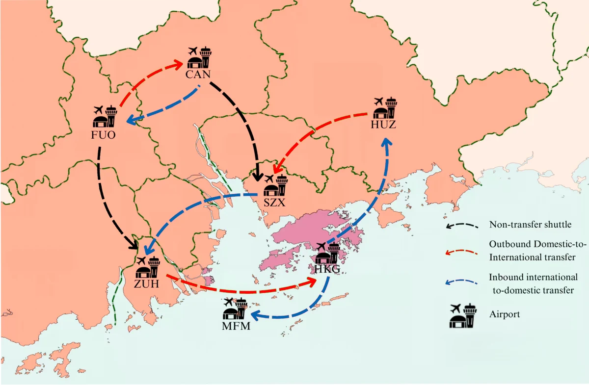

Yunxiang Shu, Kam K.H. Ng, Cheng-Lung Wu, & Hong K. Lo. (2026). Urban Air Mobility Shuttle Service Optimisation in Multi-Airport Systems. Transportation Research Part E: Logistics and Transportation Review, 217, Article 105308. https://doi.org/10.1016/j.tre.2026.105308